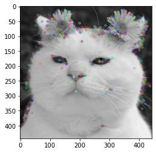

6장 특징 추출
Contents
6장 특징 추출¶
이미지에서 라인, 코너, 특징점 과 같은 특징 추출 방법을 학습한다.
SIFT¶
SIFT(scale-invariant feature transform)는 이미지 파리미드를 이용해서 크기 변화에 따른 특징 검출의 문제를 해결한 알고리즘이다. SIFT는 특허권이 있어 상업적 사용에 제약이 있다.
import cv2
import numpy as np
import matplotlib.pyplot as plt
img = cv2.imread('./img/cat-01.jpg')
gray = cv2.cvtColor(img, cv2.COLOR_BGR2GRAY)
sift = cv2.SIFT_create()
kp = sift.detect(gray, None)
img = cv2.drawKeypoints(gray, kp, img)
plt.imshow(img)
plt.show()

from skimage.io import imread
from skimage.color import rgb2ycbcr, gray2rgb
image = imread('images/skin.png')
proc_image = np.reshape(rgb2ycbcr(image), (-1, 3))
skin_score = skin_gmm.score_samples(proc_image[...,1:])
not_skin_score = not_skin_gmm.score_samples(proc_image[...,1:])
result = skin_score > not_skin_score
result = result.reshape(image.shape[0], image.shape[1])
result = np.bitwise_and(gray2rgb(255*result.astype(np.uint8)), image)
plt.figure(figsize=(20,10))
plt.subplot(121), plt.imshow(image), plt.axis('off'), plt.title('Original', size=20)
plt.subplot(122), plt.imshow(result), plt.axis('off'), plt.title('Skin Detected and Segmented with GMM', size=20)
plt.show()
---------------------------------------------------------------------------
FileNotFoundError Traceback (most recent call last)
Input In [2], in <cell line: 3>()
1 from skimage.io import imread
2 from skimage.color import rgb2ycbcr, gray2rgb
----> 3 image = imread('images/skin.png')
4 proc_image = np.reshape(rgb2ycbcr(image), (-1, 3))
5 skin_score = skin_gmm.score_samples(proc_image[...,1:])
File ~\miniconda3\envs\vision\lib\site-packages\skimage\io\_io.py:53, in imread(fname, as_gray, plugin, **plugin_args)
50 plugin = 'tifffile'
52 with file_or_url_context(fname) as fname:
---> 53 img = call_plugin('imread', fname, plugin=plugin, **plugin_args)
55 if not hasattr(img, 'ndim'):
56 return img
File ~\miniconda3\envs\vision\lib\site-packages\skimage\io\manage_plugins.py:207, in call_plugin(kind, *args, **kwargs)
203 except IndexError:
204 raise RuntimeError('Could not find the plugin "%s" for %s.' %
205 (plugin, kind))
--> 207 return func(*args, **kwargs)
File ~\miniconda3\envs\vision\lib\site-packages\skimage\io\_plugins\imageio_plugin.py:10, in imread(*args, **kwargs)
8 @wraps(imageio_imread)
9 def imread(*args, **kwargs):
---> 10 return np.asarray(imageio_imread(*args, **kwargs))
File ~\miniconda3\envs\vision\lib\site-packages\imageio\core\functions.py:265, in imread(uri, format, **kwargs)
260 raise TypeError(
261 'Invalid keyword argument "mode", ' 'perhaps you mean "pilmode"?'
262 )
264 # Get reader and read first
--> 265 reader = read(uri, format, "i", **kwargs)
266 with reader:
267 return reader.get_data(0)
File ~\miniconda3\envs\vision\lib\site-packages\imageio\core\functions.py:172, in get_reader(uri, format, mode, **kwargs)
149 """ get_reader(uri, format=None, mode='?', **kwargs)
150
151 Returns a :class:`.Reader` object which can be used to read data
(...)
168 to see what arguments are available for a particular format.
169 """
171 # Create request object
--> 172 request = Request(uri, "r" + mode, **kwargs)
174 # Get format
175 if format is not None:
File ~\miniconda3\envs\vision\lib\site-packages\imageio\core\request.py:124, in Request.__init__(self, uri, mode, **kwargs)
121 raise ValueError('Request requires mode[1] to be in "iIvV?"')
123 # Parse what was given
--> 124 self._parse_uri(uri)
126 # Set extension
127 if self._filename is not None:
File ~\miniconda3\envs\vision\lib\site-packages\imageio\core\request.py:260, in Request._parse_uri(self, uri)
257 if is_read_request:
258 # Reading: check that the file exists (but is allowed a dir)
259 if not os.path.exists(fn):
--> 260 raise FileNotFoundError("No such file: '%s'" % fn)
261 else:
262 # Writing: check that the directory to write to does exist
263 dn = os.path.dirname(fn)
FileNotFoundError: No such file: 'C:\Users\unerue\Documents\unerue.github.io\computer-vision\images\skin.png'
import cv2
# for this problem let's work with opencv 3.4.2.16
print(cv2.__version__)
# 3.4.2
# pip install opencv-contrib-python==3.4.2.16
# pip install opencv-python==3.4.2.16
import numpy as np
from matplotlib import pyplot as plt
import math
import glob
def compute_homography(image1, image2, bff_match=False):
sift = cv2.xfeatures2d.SIFT_create(edgeThreshold=10, sigma=1.5, contrastThreshold=0.08)
kp1, des1 = sift.detectAndCompute(image1, None)
kp2, des2 = sift.detectAndCompute(image2, None)
# Brute force matching
bf = cv2.BFMatcher()
matches = bf.knnMatch(des1, trainDescriptors=des2, k=2)
# Lowes Ratio
good_matches = []
for m, n in matches:
if m.distance < .75 * n.distance:
good_matches.append(m)
src_pts = np.float32([kp1[m.queryIdx].pt for m in good_matches])\
.reshape(-1, 1, 2)
dst_pts = np.float32([kp2[m.trainIdx].pt for m in good_matches])\
.reshape(-1, 1, 2)
if len(src_pts) > 4:
H, mask = cv2.findHomography(dst_pts, src_pts, cv2.RANSAC, 5)
else:
H = np.array([[0, 0, 0], [0, 0, 0], [0, 0, 0]])
return H
def warp_image(image, H):
image = cv2.cvtColor(image, cv2.COLOR_BGR2BGRA)
h, w, _ = image.shape
# Find min and max x, y of new image
p = np.array([[0, w, w, 0], [0, 0, h, h], [1, 1, 1, 1]])
p_prime = np.dot(H, p)
yrow = p_prime[1] / p_prime[2]
xrow = p_prime[0] / p_prime[2]
ymin = min(yrow)
xmin = min(xrow)
ymax = max(yrow)
xmax = max(xrow)
# Create a new matrix that removes offset and multiply by homography
new_mat = np.array([[1, 0, -1 * xmin], [0, 1, -1 * ymin], [0, 0, 1]])
H = np.dot(new_mat, H)
# height and width of new image frame
height = int(round(ymax - ymin))
width = int(round(xmax - xmin))
size = (width, height)
# Do the warp
warped = cv2.warpPerspective(src=image, M=H, dsize=size)
return warped, (int(xmin), int(ymin))
def cylindrical_warp_image(img, H):
h, w = img.shape[:2]
# pixel coordinates
y_i, x_i = np.indices((h, w))
X = np.stack([x_i,y_i,np.ones_like(x_i)],axis=-1).reshape(h*w, 3) # to homog
Hinv = np.linalg.inv(H)
X = Hinv.dot(X.T).T # normalized coords
# calculate cylindrical coords (sin\theta, h, cos\theta)
A = np.stack([np.sin(X[:,0]),X[:,1],np.cos(X[:,0])],axis=-1).reshape(w*h, 3)
B = H.dot(A.T).T # project back to image-pixels plane
# back from homog coords
B = B[:,:-1] / B[:,[-1]]
# make sure warp coords only within image bounds
B[(B[:,0] < 0) | (B[:,0] >= w) | (B[:,1] < 0) | (B[:,1] >= h)] = -1
B = B.reshape(h,w,-1)
img_rgba = cv2.cvtColor(img,cv2.COLOR_BGR2BGRA) # for transparent borders...
# warp the image according to cylindrical coords
return cv2.remap(img_rgba, B[:,:,0].astype(np.float32), B[:,:,1].astype(np.float32), cv2.INTER_AREA, borderMode=cv2.BORDER_TRANSPARENT)
def create_mosaic(images, origins):
# find central image
for i in range(0, len(origins)):
if origins[i] == (0, 0):
central_index = i
break
central_image = images[central_index]
central_origin = origins[central_index]
# zip origins and images together
zipped = list(zip(origins, images))
# sort by distance from origin (highest to lowest)
func = lambda x: math.sqrt(x[0][0] ** 2 + x[0][1] ** 2)
dist_sorted = sorted(zipped, key=func, reverse=True)
# sort by x value
x_sorted = sorted(zipped, key=lambda x: x[0][0])
# sort by y value
y_sorted = sorted(zipped, key=lambda x: x[0][1])
# determine the coordinates in the new frame of the central image
if x_sorted[0][0][0] > 0:
cent_x = 0 # leftmost image is central image
else:
cent_x = abs(x_sorted[0][0][0])
if y_sorted[0][0][1] > 0:
cent_y = 0 # topmost image is central image
else:
cent_y = abs(y_sorted[0][0][1])
# make a new list of the starting points in new frame of each image
spots = []
for origin in origins:
spots.append((origin[0]+cent_x, origin[1] + cent_y))
zipped = zip(spots, images)
# get height and width of new frame
total_height = 0
total_width = 0
for spot, image in zipped:
total_width = max(total_width, spot[0]+image.shape[1])
total_height = max(total_height, spot[1]+image.shape[0])
# print "height ", total_height
# print "width ", total_width
# new frame of panorama
stitch = np.zeros((total_height, total_width, 4), np.uint8)
# stitch images into frame by order of distance
for image in dist_sorted:
offset_y = image[0][1] + cent_y
offset_x = image[0][0] + cent_x
end_y = offset_y + image[1].shape[0]
end_x = offset_x + image[1].shape[1]
####
stitch_cur = stitch[offset_y:end_y, offset_x:end_x, :4]
stitch_cur[image[1]>0] = image[1][image[1]>0]
####
#stitch[offset_y:end_y, offset_x:end_x, :4] = image[1]
return stitch
def create_panorama(images, center):
h,w,_ = images[0].shape
f = 1000 # 800
H = np.array([[f, 0, w/2], [0, f, h/2], [0, 0, 1]])
for i in range(len(images)):
images[i] = cylindrical_warp_image(images[i], H)
panorama = None
for i in range(center):
print('Stitching images {}, {}'.format(i+1, i+2))
image_warped, image_origin = warp_image(images[i], compute_homography(images[i + 1], images[i]))
panorama = create_mosaic([image_warped, images[i+1]], [image_origin, (0,0)])
images[i + 1] = panorama
#print('Done left part')
for i in range(center, len(images)-1):
print('Stitching images {}, {}'.format(i+1, i+2))
image_warped, image_origin = warp_image(images[i+1], compute_homography(images[i], images[i + 1]))
panorama = create_mosaic([images[i], image_warped], [(0,0), image_origin])
images[i + 1] = panorama
#print('Done right part')
return panorama
images = [ cv2.cvtColor(cv2.imread(img), cv2.COLOR_RGB2RGBA) for img in glob.glob('images/victoria*.png')]
plt.figure(figsize=(20,4))
plt.subplots_adjust(top = 0.8, bottom = 0, right = 1, left = 0, hspace = 0, wspace = 0.05)
plt.margins(0,0)
for i in range(len(images)):
plt.subplot(1,len(images),i+1), plt.imshow(cv2.cvtColor(images[i], cv2.COLOR_BGR2RGB)), plt.axis('off'), plt.title('Image {}'.format(i+1), size=15)
plt.suptitle('Images to Stitch', size=20)
plt.show()
center = len(images) // 2
#print(len(images), center)
panorama = create_panorama(images, center)
plt.figure(figsize=(20,8))
plt.subplots_adjust(top = 0.9, bottom = 0, right = 1, left = 0, hspace = 0, wspace = 0)
plt.margins(0,0)
plt.imshow(cv2.cvtColor(panorama, cv2.COLOR_BGR2RGB)), plt.axis('off'), plt.title('Final Panorama Image', size=15)
plt.show()
Image Classification with scikit-learn (HOG + Loistic Regression)¶
# http://www.vision.caltech.edu/Image_Datasets/Caltech101/
# https://www.kaggle.com/manikg/training-svm-classifier-with-hog-features
%matplotlib inline
import numpy as np
from skimage.io import imread
from skimage.color import gray2rgb
from skimage.transform import resize
from skimage.feature import hog
from sklearn.linear_model import LogisticRegression
from sklearn.model_selection import train_test_split
from sklearn.metrics import classification_report,accuracy_score
from glob import glob
from matplotlib import pyplot as plt
images, hog_images = [], []
X, y = [], []
ppc = 16
sz = 200
for dir in glob('images/Caltech101_images/*'):
image_files = glob(dir + '/*.jpg')
label = dir.split('\\')[-1]
print(label, len(image_files))
for image_file in image_files:
image = resize(imread(image_file), (sz,sz))
if len(image.shape) == 2: # if a gray-scale image
image = gray2rgb(image)
fd,hog_image = hog(image, orientations=8, pixels_per_cell=(ppc,ppc),cells_per_block=(4, 4),block_norm= 'L2',visualize=True, multichannel=True)
images.append(image)
hog_images.append(hog_image)
X.append(fd)
y.append(label)
print(len(images), hog_images[0].shape, X[0].shape, X[1].shape, len(y))
n = 6
indices = np.random.choice(len(images), n*n)
plt.figure(figsize=(20,20))
plt.gray()
i = 1
for index in indices:
plt.subplot(n,n,i), plt.imshow(images[index]), plt.axis('off'), plt.title(y[index], size=20)
i += 1
plt.show()
plt.figure(figsize=(20,20))
i = 1
for index in indices:
plt.subplot(n,n,i), plt.imshow(hog_images[index]), plt.axis('off'), plt.title(y[index], size=20)
i += 1
plt.show()
X = np.array(X)
y = np.array(y)
indices = np.arange(len(X))
X_train, X_test, y_train, y_test, id_train, id_test = train_test_split(X, y, indices, test_size=0.1, random_state=1)
print(X.shape, y.shape)
y_pred = clf.predict(X_train)
print("Accuracy: " + str(accuracy_score(y_train, y_pred)))
print('\n')
print(classification_report(y_train, y_pred))
y_pred = clf.predict(X_test)
print("Accuracy: " + str(accuracy_score(y_test, y_pred)))
print('\n')
print(classification_report(y_test, y_pred))
plt.figure(figsize=(20,20))
j = 0
for i in id_test:
plt.subplot(10,10,j+1), plt.imshow(images[i]), plt.axis('off'), plt.title('{}/{}'.format(y_test[j], y_pred[j]))
j += 1
plt.suptitle('Actual vs. Predicted Class Labels', size=20)
plt.show()
Image Classification with VGG-19 / Inception V3 / MobileNet / ResNet101 (with deep learning, pytorch)¶
import torch
from torchvision import models, transforms
from PIL import Image, ImageDraw, ImageFont
import numpy as np
import matplotlib.pylab as plt
def classify(img, model_index, model_name, model_pred, labels):
#print(model_name, model_pred.shape)
_, index = torch.max(model_pred, 1)
model_pred, indices = torch.sort(model_pred, dim=1, descending=True)
percentage = torch.nn.functional.softmax(model_pred, dim=1)[0] * 100
print(labels[index[0]], percentage[0].item())
draw = ImageDraw.Draw(img)
font = ImageFont.truetype(r'arial.ttf', 50)
draw.text((5, 5+model_index*50),'{}, pred: {},{}%'.format(model_name, labels[index[0]], round(percentage[0].item(),2)),(255,0,0),font=font)
return indices, percentage
print(dir(models))
with open('models/imagenet_classes.txt') as f:
labels = [line.strip() for line in f.readlines()]
transform = transforms.Compose([
transforms.Resize(256),
transforms.CenterCrop(224),
transforms.ToTensor(),
transforms.Normalize(
mean=[0.485, 0.456, 0.406],
std=[0.229, 0.224, 0.225]
)])
for imgfile in ["images/cheetah.png", "images/swan.png"]:
img = Image.open(imgfile).convert('RGB')
img_t = transform(img)
batch_t = torch.unsqueeze(img_t, 0)
vgg19 = models.vgg19(pretrained=True)
vgg19.eval()
pred = vgg19(batch_t)
classify(img, 0, 'vgg19', pred, labels)
mobilenetv2 = models.mobilenet_v2(pretrained=True)
mobilenetv2.eval()
pred = mobilenetv2(batch_t)
classify(img, 1, 'mobilenetv2', pred, labels)
inceptionv3 = models.inception_v3(pretrained=True)
inceptionv3.eval()
pred = inceptionv3(batch_t)
classify(img, 2, 'inceptionv3', pred, labels)
resnet101 = models.resnet101(pretrained=True)
resnet101.eval()
pred = resnet101(batch_t)
indices, percentages = classify(img, 3, 'resnet101', pred, labels)
plt.figure(figsize=(20,10))
plt.subplot(121), plt.imshow(img), plt.axis('off'), plt.title('image classified with pytorch', size=20)
plt.subplot(122), plt.bar(range(5), percentages.detach().numpy()[:5], align='center', alpha=0.5)
#print(indices[0].detach().numpy()[:5])
plt.xticks(range(5), np.array(labels)[indices.detach().numpy().astype(int)[0][:5]])
plt.xlabel('predicted labels', size=20), plt.ylabel('predicted percentage', size=20)
plt.title('Resnet top 5 classes predicted', size=20)
plt.show()
Traffic Signal Classification with deep learning¶
#!mkdir traffic_signs
import os, glob
from shutil import copy
import pandas as pd
image_dir = 'GTSRB/Final_Training/Images/'
dest_dir = 'traffic_signs'
df = pd.DataFrame()
for d in sorted(os.listdir(image_dir)):
#print(d)
images = sorted(glob.glob(os.path.join(image_dir, d, '*.ppm')))
for img in images:
copy(img, dest_dir)
for csv in sorted(glob.glob(os.path.join(image_dir, d, '*.csv'))):
df1 = pd.read_csv(csv, sep=';')
df = df.append(df1)
#print(df.head())
print(d, len(images), df1.shape)
df.to_csv(os.path.join(dest_dir, 'labels.csv'))
import pandas as pd
signal_names = pd.read_csv('images/signal_names.csv')
signal_names.head()
%matplotlib inline
import pickle
import numpy as np
import matplotlib.pylab as plt
import seaborn as sns
training_file = "traffic_signs/train.p"
validation_file = "traffic_signs/valid.p"
testing_file = "traffic_signs/test.p"
with open(training_file, mode='rb') as f:
train = pickle.load(f)
with open(validation_file, mode='rb') as f:
valid = pickle.load(f)
with open(testing_file, mode='rb') as f:
test = pickle.load(f)
X_train, y_train = train['features'], train['labels']
X_valid, y_valid = valid['features'], valid['labels']
X_test, y_test = test['features'], test['labels']
n_signs = len(np.unique(y_train))
print(X_train.shape, X_valid.shape, X_test.shape, n_signs)
plt.figure(figsize=(12,8))
# plot barh chart with index as x values
ax = sns.barplot(list(range(n_signs)), np.bincount(y_train))
ax.get_yaxis().set_major_formatter(plt.FuncFormatter(lambda x, loc: "{:,}".format(int(x))))
plt.tight_layout()
plt.show()
plt.figure(figsize=(20, 20))
for c in range(n_signs):
i = np.random.choice(np.where(y_train == c)[0])
plt.subplot(8, 6, c+1)
plt.axis('off')
plt.title(signal_names.loc[signal_names['ClassId'] == c].SignName.to_string(index=False))
plt.imshow(X_train[i])
import cv2
import torch
from torch.utils.data.dataset import Dataset
from torch.utils.data import DataLoader
import torchvision.transforms as transforms
from torchvision.utils import make_grid
import torch.utils.data.sampler as sampler
from torch import nn, optim
from livelossplot import PlotLosses
import torch.nn.functional as F
import os
class TraffficNet(nn.Module):
def __init__(self, gray=False):
super(TraffficNet, self).__init__()
input_chan = 1 if gray else 3
self.conv1 = nn.Conv2d(input_chan, 6, 5)
self.pool = nn.MaxPool2d(2, 2)
self.conv2 = nn.Conv2d(6, 16, 5)
self.fc1 = nn.Linear(16 * 5 * 5, 120)
self.fc2 = nn.Linear(120, 84)
self.fc3 = nn.Linear(84, 43)
def forward(self, x):
x = self.pool(F.relu(self.conv1(x)))
x = self.pool(F.relu(self.conv2(x)))
x = x.view(-1, 16 * 5 * 5)
x = F.relu(self.fc1(x))
x = F.relu(self.fc2(x))
x = self.fc3(x)
return x
class ClaheTranform:
def __init__(self, clipLimit=2.5, tileGridSize=(4, 4)):
self.clipLimit = clipLimit
self.tileGridSize = tileGridSize
def __call__(self, im):
img_y = cv2.cvtColor(im, cv2.COLOR_RGB2YCrCb)[:,:,0]
clahe = cv2.createCLAHE(clipLimit=self.clipLimit, tileGridSize=self.tileGridSize)
img_y = clahe.apply(img_y)
img_output = img_y.reshape(img_y.shape + (1,))
return img_output
class PickledTrafficSignsDataset(Dataset):
def __init__(self, file_path, transform=None):
with open(file_path, mode='rb') as f:
data = pickle.load(f)
self.features = data['features']
self.labels = data['labels']
self.count = len(self.labels)
self.transform = transform
def __getitem__(self, index):
feature = self.features[index]
if self.transform is not None:
feature = self.transform(feature)
return (feature, self.labels[index])
def __len__(self):
return self.count
def train(model, device):
data_transforms = transforms.Compose([
ClaheTranform(),
transforms.ToTensor()
])
torch.manual_seed(1)
train_dataset = PickledTrafficSignsDataset(training_file, transform=data_transforms)
valid_dataset = PickledTrafficSignsDataset(validation_file, transform=data_transforms)
test_dataset = PickledTrafficSignsDataset(testing_file, transform=data_transforms)
class_sample_count = np.bincount(train_dataset.labels)
weights = 1 / np.array([class_sample_count[y] for y in train_dataset.labels])
samp = sampler.WeightedRandomSampler(weights, 43 * 2000)
train_loader = DataLoader(train_dataset, batch_size=64, sampler=samp)
#train_loader = DataLoader(train_dataset, batch_size=64, shuffle=True)
valid_loader = DataLoader(valid_dataset, batch_size=64, shuffle=False)
test_loader = DataLoader(test_dataset, batch_size=64, shuffle=False)
optimizer = optim.SGD(model.parameters(), lr=0.005, momentum=0.7)
train_epochs(model, device, train_loader, valid_loader, optimizer)
def train_epochs(model, device, train_data_loader, valid_data_loader, optimizer):
liveloss = PlotLosses()
loss_function = nn.CrossEntropyLoss()
running_loss = 0.0
running_corrects = 0
data_loaders = {'train': train_data_loader, 'validation':valid_data_loader}
for epoch in range(20):
logs = {}
for phase in ['train', 'validation']:
if phase == 'train':
model.train()
else:
model.eval()
running_loss = 0.0
running_corrects = 0
total = 0
for batch_idx, (data, target) in enumerate(data_loaders[phase]):
if phase == 'train':
output = model(data.to(device))
target = target.long().to(device)
loss = loss_function(output, target)
optimizer.zero_grad()
loss.backward()
optimizer.step()
else:
with torch.no_grad():
output = model(data.to(device))
target = target.long().to(device)
loss = loss_function(output, target)
if batch_idx % 100 == 0:
print('Train Epoch: {} [{}/{} ({:.0f}%)]\t{} Loss: {:.6f}'.format(
epoch, batch_idx * len(data), len(data_loaders[phase].dataset),
100. * batch_idx / len(data_loaders[phase]), phase, loss.item()))
pred = torch.argmax(output, dim=1)
running_loss += loss.detach()
running_corrects += torch.sum(pred == target).sum().item()
total += target.size(0)
epoch_loss = running_loss / len(data_loaders[phase].dataset)
epoch_acc = running_corrects / total
prefix = ''
if phase == 'validation':
prefix = 'val_'
logs[prefix + 'log loss'] = epoch_loss.item()
logs[prefix + 'accuracy'] = epoch_acc#.item()
liveloss.update(logs)
liveloss.draw()
device = torch.device("cuda" if torch.cuda.is_available() else "cpu")
model = TraffficNet(True).to(device)
model.share_memory() # gradients are allocated lazily, so they are not shared here
train(model, device)
data_transforms = transforms.Compose([
ClaheTranform(),
transforms.ToTensor()
])
test_dataset = PickledTrafficSignsDataset(testing_file, transform=data_transforms)
test_loader = DataLoader(test_dataset, batch_size=64, shuffle=False)
for (batch_idx, data) in enumerate(test_loader):
with torch.no_grad():
output = model(data[0].to(device))
pred = torch.argmax(output, dim=1)
break
plt.figure(figsize=(20, 20))
for i in range(len(pred)):
plt.subplot(11, 6, i+1)
plt.axis('off')
plt.title(signal_names.loc[signal_names['ClassId'] == pred[i].cpu().numpy()].SignName.to_string(index=False))
plt.imshow(np.reshape(data[0][i,...].cpu().numpy(), (-1,32)), cmap='gray')
plt.show()
Human pose estimation using Deep Learning¶
%matplotlib inline
import cv2
import time
import numpy as np
import matplotlib.pyplot as plt
from torch.utils import data
#print(cv2.__version__)
proto_file = "models/pose_deploy_linevec_faster_4_stages.prototxt"
weights_file = "models/pose_iter_160000.caffemodel"
n_points = 15
body_parts = {"Head": 0, "Neck": 1, "RShoulder": 2, "RElbow": 3, "RWrist": 4,
"LShoulder": 5, "LElbow": 6, "LWrist": 7, "RHip": 8, "RKnee": 9,
"RAnkle": 10, "LHip": 11, "LKnee": 12, "LAnkle": 13, "Chest": 14, "Background": 15}
#pose_parts = [[0,1], [1,2], [2,3], [3,4], [1,5], [5,6], [6,7], [1,14], [14,8], [8,9], [9,10], [14,11], [11,12], [12,13] ]
pose_parts = [ ["Head", "Neck"], ["Neck", "RShoulder"], ["RShoulder", "RElbow"],
["RElbow", "RWrist"], ["Neck", "LShoulder"], ["LShoulder", "LElbow"],
["LElbow", "LWrist"], ["Neck", "Chest"], ["Chest", "RHip"], ["RHip", "RKnee"],
["RKnee", "RAnkle"], ["Chest", "LHip"], ["LHip", "LKnee"], ["LKnee", "LAnkle"] ]
image = cv2.imread("images/leander.png")
height, width = image.shape[:2]
threshold = 0.1
net = cv2.dnn.readNetFromCaffe(proto_file, weights_file)
blob = cv2.dnn.blobFromImage(image, 1.0 / 255, (368,368), (0, 0, 0), swapRB=False, crop=False)
net.setInput(blob)
output = net.forward()
h, w = output.shape[2:4]
print(output.shape)
plt.figure(figsize=[14,10])
plt.imshow(cv2.cvtColor(image, cv2.COLOR_BGR2RGB))
prob_map = np.zeros((width, height))
for i in range(1,5):
pmap = output[0, i, :, :]
prob_map += cv2.resize(pmap, (height, width))
plt.imshow(prob_map, alpha=0.6)
plt.colorbar()
plt.axis("off")
plt.show()
image1 = image.copy()
# Empty list to store the detected keypoints
points = []
for i in range(n_points):
# confidence map of corresponding body's part.
prob_map = output[0, i, :, :]
# Find local maxima of the prob_map.
min_val, prob, min_loc, point = cv2.minMaxLoc(prob_map)
# Scale the point to fit on the original image
x = (width * point[0]) / w
y = (height * point[1]) / h
if prob > threshold :
cv2.circle(image1, (int(x), int(y)), 8, (255, 0, 255), thickness=-1, lineType=cv2.FILLED)
cv2.putText(image1, "{}".format(i), (int(x), int(y)), cv2.FONT_HERSHEY_SIMPLEX, 0.6, (0, 255, 0), 2, lineType=cv2.LINE_AA)
cv2.circle(image, (int(x), int(y)), 8, (255, 0, 255), thickness=-1, lineType=cv2.FILLED)
# Add the point to the list if the probability is greater than the threshold
points.append((int(x), int(y)))
else :
points.append(None)
# Draw Skeleton
for pair in pose_parts:
part_from = body_parts[pair[0]]
part_to = body_parts[pair[1]]
if points[part_from] and points[part_to]:
cv2.line(image, points[part_from], points[part_to], (0, 255, 0), 3)
plt.figure(figsize=[20,12])
plt.subplot(121), plt.imshow(cv2.cvtColor(image1, cv2.COLOR_BGR2RGB)), plt.axis('off'), plt.title('Keypoints', size=20)
plt.subplot(122), plt.imshow(cv2.cvtColor(image, cv2.COLOR_BGR2RGB)), plt.axis('off'), plt.title('Pose', size=20)
plt.show()
#http://slazebni.cs.illinois.edu/research/uiuc_texture_dataset.zip
from glob import glob
for class_name in glob('images/UIUC_textures/*'):
print(class_name)
#https://gogul.dev/software/texture-recognition
import matplotlib.pyplot as plt
import numpy as np
from skimage.io import imread
from skimage.color import rgb2gray
from skimage.filters import gabor_kernel
# prepare filter bank kernels
kernels = []
for theta in range(4):
theta = theta / 4. * np.pi
for sigma in (1, 3):
for frequency in (0.05, 0.25):
kernel = np.real(gabor_kernel(frequency, theta=theta, sigma_x=sigma, sigma_y=sigma))
kernels.append(kernel)
def power(image, kernel):
# Normalize images for better comparison.
image = (image - image.mean()) / image.std()
return np.sqrt(ndi.convolve(image, np.real(kernel), mode='wrap')**2 +
ndi.convolve(image, np.imag(kernel), mode='wrap')**2)
image_names = ['images/UIUC_textures/woods/T04_01.jpg',
'images/UIUC_textures/stones/T12_01.jpg',
'images/UIUC_textures/bricks/T15_01.jpg',
'images/UIUC_textures/checks/T25_01.jpg',
]
labels = ['woods', 'stones', 'bricks', 'checks']
images = []
for image_name in image_names:
images.append(rgb2gray(imread(image_name)))
# Plot a selection of the filter bank kernels and their responses.
results = []
kernel_params = []
for theta in (0, 1):
theta = theta / 4. * np.pi
for frequency in (0.1, 0.4):
kernel = gabor_kernel(frequency, theta=theta)
params = 'theta=%d,\nfrequency=%.2f' % (theta * 180 / np.pi, frequency)
kernel_params.append(params)
# Save kernel and the power image for each image
results.append((kernel, [power(img, kernel) for img in images]))
fig, axes = plt.subplots(nrows=5, ncols=5, figsize=(20, 20))
plt.gray()
plt.subplots_adjust(0,0,1,0.95,0.05,0.05)
fig.suptitle('Image responses for Gabor filter kernels', fontsize=25)
axes[0][0].axis('off')
# Plot original images
for label, img, ax in zip(labels, images, axes[0][1:]):
ax.imshow(img)
ax.set_title(label, fontsize=15)
ax.axis('off')
for label, (kernel, powers), ax_row in zip(kernel_params, results, axes[1:]):
# Plot Gabor kernel
ax = ax_row[0]
ax.imshow(np.real(kernel))
ax.set_ylabel(label, fontsize=15)
ax.set_xticks([])
ax.set_yticks([])
# Plot Gabor responses with the contrast normalized for each filter
vmin = np.min(powers)
vmax = np.max(powers)
for patch, ax in zip(powers, ax_row[1:]):
ax.imshow(patch, vmin=vmin, vmax=vmax)
ax.axis('off')
plt.show()
def compute_feats(image, kernels):
feats = np.zeros((len(kernels), 2), dtype=np.double)
for k, kernel in enumerate(kernels):
filtered = ndi.convolve(image, kernel, mode='wrap')
feats[k, 0] = filtered.mean()
feats[k, 1] = filtered.var()
return feats
def match(feats, ref_feats):
min_error = np.inf
min_i = None
for i in range(ref_feats.shape[0]):
error = np.sum((feats - ref_feats[i, :])**2)
if error < min_error:
min_error = error
min_i = i
return min_i
# prepare reference features
ref_feats = np.zeros((4, len(kernels), 2), dtype=np.double)
for i in range(4):
ref_feats[i, :, :] = compute_feats(images[i], kernels)
print('Images matched against references using Gabor filter banks:')
new_image_names = ['images/UIUC_textures/woods/T04_02.jpg',
'images/UIUC_textures/stones/T12_02.jpg',
'images/UIUC_textures/bricks/T15_02.jpg',
'images/UIUC_textures/checks/T25_02.jpg',
]
plt.figure(figsize=(10,18))
plt.subplots_adjust(0,0,1,0.95,0.05,0.05)
for i in range(4):
image = rgb2gray(imread(new_image_names[i]))
feats = compute_feats(image, kernels)
mindex = match(feats, ref_feats)
print('original: {}, match result: {} '.format(labels[i], labels[mindex]))
plt.subplot(4,2,2*i+1), plt.imshow(image), plt.axis('off'), plt.title('Original', size=20)
plt.subplot(4,2,2*i+2), plt.imshow(images[mindex]), plt.axis('off'), plt.title('Recognized as ({})'.format(labels[mindex]), size=20)
plt.show()
People Detection with HOG/SVM¶
mport numpy as np
import cv2
import matplotlib.pylab as plt
img = cv2.imread("images/walk.png")
# create HOG descriptor using default people (pedestrian) detector
hog = cv2.HOGDescriptor()
hog.setSVMDetector(cv2.HOGDescriptor_getDefaultPeopleDetector())
# run detection, using a spatial stride of 4 pixels (horizontal and vertical), a scale stride of 1.02, and zero grouping of rectangles (to
# demonstrate that HOG will detect at potentially multiple places in the scale pyramid)
(found_bounding_boxes, weights) = hog.detectMultiScale(img, winStride=(4, 4), padding=(8, 8), scale=1.1, finalThreshold=0)
print(len(found_bounding_boxes)) # number of boundingboxes
# 314
# copy the original image to draw bounding boxes on it for now, as we'll use it again later
img_with_waw_bboxes = img.copy()
for (hx, hy, hw, hh) in found_bounding_boxes:
cv2.rectangle(img_with_waw_bboxes, (hx, hy), (hx + hw, hy + hh), (0, 0, 255), 2)
plt.figure(figsize=(20, 12))
img_with_waw_bboxes = cv2.cvtColor(img_with_waw_bboxes, cv2.COLOR_BGR2RGB)
plt.imshow(img_with_waw_bboxes, aspect='auto'), plt.axis('off')
plt.title('Boundingboxes found by HOG-SVM without grouping', size=20)
plt.show()
#https://gist.github.com/CMCDragonkai/1be3402e261d3c239a307a3346360506
def non_max_suppression(boxes, scores, threshold):
assert boxes.shape[0] == scores.shape[0]
# bottom-left origin
ys1 = boxes[:, 0]
xs1 = boxes[:, 1]
# top-right target
ys2 = boxes[:, 2]
xs2 = boxes[:, 3]
# box coordinate ranges are inclusive-inclusive
areas = (ys2 - ys1) * (xs2 - xs1)
scores_indexes = scores.argsort().tolist()
boxes_keep_index = []
while len(scores_indexes):
index = scores_indexes.pop()
boxes_keep_index.append(index)
if not len(scores_indexes):
break
ious = compute_iou(boxes[index], boxes[scores_indexes], areas[index],
areas[scores_indexes])
filtered_indexes = set((ious > threshold).nonzero()[0])
# if there are no more scores_index
# then we should pop it
scores_indexes = [
v for (i, v) in enumerate(scores_indexes)
if i not in filtered_indexes
]
return np.array(boxes_keep_index)
def compute_iou(box, boxes, box_area, boxes_area):
# this is the iou of the box against all other boxes
assert boxes.shape[0] == boxes_area.shape[0]
# get all the origin-ys
# push up all the lower origin-xs, while keeping the higher origin-xs
ys1 = np.maximum(box[0], boxes[:, 0])
# get all the origin-xs
# push right all the lower origin-xs, while keeping higher origin-xs
xs1 = np.maximum(box[1], boxes[:, 1])
# get all the target-ys
# pull down all the higher target-ys, while keeping lower origin-ys
ys2 = np.minimum(box[2], boxes[:, 2])
# get all the target-xs
# pull left all the higher target-xs, while keeping lower target-xs
xs2 = np.minimum(box[3], boxes[:, 3])
# each intersection area is calculated by the pulled target-x minus the pushed origin-x
# multiplying pulled target-y minus the pushed origin-y
# we ignore areas where the intersection side would be negative
# this is done by using maxing the side length by 0
intersections = np.maximum(ys2 - ys1, 0) * np.maximum(xs2 - xs1, 0)
# each union is then the box area added to each other box area minusing their intersection calculated above
unions = box_area + boxes_area - intersections
# element wise division
# if the intersection is 0, then their ratio is 0
ious = intersections / unions
return ious
(found_bounding_boxes, weights) = hog.detectMultiScale(img, winStride=(4, 4), padding=(8, 8), scale=1.1, finalThreshold=0)
print(len(found_bounding_boxes)) # number of boundingboxes
# 70
found_bounding_boxes[:,2] = found_bounding_boxes[:,0] + found_bounding_boxes[:,2]
found_bounding_boxes[:,3] = found_bounding_boxes[:,1] + found_bounding_boxes[:,3]
boxIndices = non_max_suppression(found_bounding_boxes, weights.ravel(), threshold=0.2)
found_bounding_boxes = found_bounding_boxes[boxIndices,:]
found_bounding_boxes[:,2] = found_bounding_boxes[:,2] - found_bounding_boxes[:,0]
found_bounding_boxes[:,3] = found_bounding_boxes[:,3] - found_bounding_boxes[:,1]
print(len(found_bounding_boxes)) # number of boundingboxes
# 4
# copy the original image to draw bounding boxes on it for now, as we'll use it again later
img_with_waw_bboxes = img.copy()
for (hx, hy, hw, hh) in found_bounding_boxes:
cv2.rectangle(img_with_waw_bboxes, (hx, hy), (hx + hw, hy + hh), (0, 0, 255), 2)
plt.figure(figsize=(20, 12))
img_with_waw_bboxes = cv2.cvtColor(img_with_waw_bboxes, cv2.COLOR_BGR2RGB)
plt.imshow(img_with_waw_bboxes, aspect='auto'), plt.axis('off')
plt.title('Boundingboxes found by HOG-SVM after non-max-suppression', size=20)
plt.show()
# with meanshiftgrouping to get rid of multiple detections of the same object
(found_bounding_boxes, weights) = hog.detectMultiScale(img, winStride=(4, 4), padding=(8, 8), scale=1.01, useMeanshiftGrouping=True)
print(len(found_bounding_boxes)) # number of boundingboxes
# 3
# copy the original image to draw bounding boxes on it for now, as we'll use it again later
img_with_waw_bboxes = img.copy()
for (hx, hy, hw, hh) in found_bounding_boxes:
cv2.rectangle(img_with_waw_bboxes, (hx, hy), (hx + hw, hy + hh), (0, 0, 255), 2)
plt.figure(figsize=(20, 12))
img_with_waw_bboxes = cv2.cvtColor(img_with_waw_bboxes, cv2.COLOR_BGR2RGB)
plt.imshow(img_with_waw_bboxes, aspect='auto'), plt.axis('off')
plt.title('Boundingboxes found by HOG-SVM with meanshift grouping', size=20)
plt.show()
Object Detection with Yolo V3 (OpenCV-python)¶
# https://pjreddie.com/darknet/yolo/
import cv2
import numpy as np
import matplotlib.pylab as plt
from PIL import Image, ImageDraw, ImageFont
import colorsys
from random import shuffle
# Initialize the parameters
conf_threshold = 0.5 #Confidence threshold
nms_threshold = 0.4 #Non-maximum suppression threshold
width = 416 #Width of network's input image
height = 416 #Height of network's input image
# Load names of classes
classes_file = "models/yolov3/coco_classes.txt";
classes = None
with open(classes_file, 'rt') as f:
classes = f.read().rstrip('\n').split('\n')
# Give the configuration and weight files for the model and load the network using them.
model_configuration = "models/yolov3/yolov3.cfg"
model_weights = "models/yolov3/yolov3.weights"
net = cv2.dnn.readNetFromDarknet(model_configuration, model_weights)
net.setPreferableBackend(cv2.dnn.DNN_BACKEND_OPENCV)
net.setPreferableTarget(cv2.dnn.DNN_TARGET_CPU)
# Get the names of the output layers
def get_output_layers(net):
# Get the names of all the layers in the network
layersNames = net.getLayerNames()
# Get the names of the output layers, i.e. the layers with unconnected outputs
return [layersNames[i[0] - 1] for i in net.getUnconnectedOutLayers()]
# Draw the predicted bounding box
def draw_boxes(img, class_id, conf, left, top, right, bottom):
# Draw a bounding box.
label = "{}: {:.2f}%".format(classes[class_id], conf * 100)
color = tuple([int(255*x) for x in colors[class_id]])
top = top - 15 if top - 15 > 15 else top + 15
pil_im = Image.fromarray(cv2.cvtColor(img,cv2.COLOR_BGR2RGB))
thickness = (img.shape[0] + img.shape[1]) // 300
font = ImageFont.truetype("images/verdana.ttf", 25)
draw = ImageDraw.Draw(pil_im)
label_size = draw.textsize(label, font)
if top - label_size[1] >= 0:
text_origin = np.array([left, top - label_size[1]])
else:
text_origin = np.array([left, top + 1])
for i in range(thickness):
draw.rectangle([left + i, top + i, right - i, bottom - i], outline=color)
draw.rectangle([tuple(text_origin), tuple(text_origin + label_size)], fill=color)
draw.text(text_origin, label, fill=(0, 0, 0), font=font)
del draw
img = cv2.cvtColor(np.array(pil_im), cv2.COLOR_RGB2BGR)
return img
# Remove the bounding boxes with low confidence using non-maxima suppression
def post_process(img, outs):
heighteight = img.shape[0]
widthidth = img.shape[1]
class_ids = []
confidences = []
boxes = []
# Scan through all the bounding boxes output from the network and keep only the
# ones with high confidence scores. Assign the box's class label as the class with the highest score.
class_ids = []
confidences = []
boxes = []
for out in outs:
for detection in out:
scores = detection[5:]
class_id = np.argmax(scores)
confidence = scores[class_id]
if confidence > conf_threshold:
center_x = int(detection[0] * widthidth)
center_y = int(detection[1] * heighteight)
width = int(detection[2] * widthidth)
height = int(detection[3] * heighteight)
left = int(center_x - width / 2)
top = int(center_y - height / 2)
class_ids.append(class_id)
confidences.append(float(confidence))
boxes.append([left, top, width, height])
# Perform non maximum suppression to eliminate redundant overlapping boxes with
# lower confidences.
indices = cv2.dnn.NMSBoxes(boxes, confidences, conf_threshold, nms_threshold)
for i in indices:
i = i[0]
box = boxes[i]
left = box[0]
top = box[1]
width = box[2]
height = box[3]
img = draw_boxes(img, class_ids[i], confidences[i], left, top, left + width, top + height)
return img
hsv_tuples = [(x/len(classes), x/len(classes), 0.8) for x in range(len(classes))]
shuffle(hsv_tuples)
colors = list(map(lambda x: colorsys.hsv_to_rgb(*x), hsv_tuples))
img = cv2.imread('images/mytable.png')
orig = np.copy(img)
# Create a 4D blob from a img.
blob = cv2.dnn.blobFromImage(img, 1/255, (width, height), [0,0,0], 1, crop=False)
# Sets the input to the network
net.setInput(blob)
# Runs the forward pass to get output of the output layers
outs = net.forward(get_output_layers(net))
# Remove the bounding boxes with low confidence
img = post_process(img, outs)
fig = plt.figure(figsize=(20,15))
plt.imshow(cv2.cvtColor(img, cv2.COLOR_BGR2RGB)), plt.axis('off'), plt.title('Objects detected with Yolo (v3)', size=20)
plt.show()
import torch
import torch.nn as nn
import torch.optim as optim
import torch.nn.functional as F
from torch.utils.data import DataLoader
import torchvision.transforms as transforms
import torchvision.datasets as datasets
import matplotlib.pyplot as plt
class MyModel(nn.Module):
def __init__(self):
super(MyModel, self).__init__()
self.conv1 = nn.Conv2d(1, 3, 3, 1, 1)
self.pool1 = nn.MaxPool2d(2)
self.conv2 = nn.Conv2d(3, 6, 3, 1, 1)
self.pool2 = nn.MaxPool2d(2)
self.conv_trans1 = nn.ConvTranspose2d(6, 3, 4, 2, 1)
self.conv_trans2 = nn.ConvTranspose2d(3, 1, 4, 2, 1)
def forward(self, x):
x = F.relu(self.pool1(self.conv1(x)))
x = F.relu(self.pool2(self.conv2(x)))
x = F.relu(self.conv_trans1(x))
x = self.conv_trans2(x)
return x
dataset = datasets.MNIST(
root='PATH',
transform=transforms.ToTensor()
)
loader = DataLoader(
dataset,
num_workers=2,
batch_size=8,
shuffle=True
)
model = MyModel()
criterion = nn.BCEWithLogitsLoss()
optimizer = optim.Adam(model.parameters(), lr=1e-3)
epochs = 1
for epoch in range(epochs):
for batch_idx, (data, target) in enumerate(loader):
optimizer.zero_grad()
output = model(data)
loss = criterion(output, data)
loss.backward()
optimizer.step()
print('Epoch {}, Batch idx {}, loss {}'.format(
epoch, batch_idx, loss.item()))
def normalize_output(img):
img = img - img.min()
img = img / img.max()
return img
# Plot some images
idx = torch.randint(0, output.size(0), ())
pred = normalize_output(output[idx, 0])
img = data[idx, 0]
fig, axarr = plt.subplots(1, 2)
axarr[0].imshow(img.detach().numpy())
axarr[1].imshow(pred.detach().numpy())
# Visualize feature maps
activation = {}
def get_activation(name):
def hook(model, input, output):
activation[name] = output.detach()
return hook
model.conv1.register_forward_hook(get_activation('conv1'))
data, _ = dataset[0]
data.unsqueeze_(0)
output = model(data)
act = activation['conv1'].squeeze()
fig, axarr = plt.subplots(act.size(0))
for idx in range(act.size(0)):
axarr[idx].imshow(act[idx])
---------------------------------------------------------------------------
RuntimeError Traceback (most recent call last)
<ipython-input-1-e416c9436409> in <module>
31 dataset = datasets.MNIST(
32 root='PATH',
---> 33 transform=transforms.ToTensor()
34 )
35 loader = DataLoader(
~\anaconda3\envs\vision\lib\site-packages\torchvision\datasets\mnist.py in __init__(self, root, train, transform, target_transform, download)
71
72 if not self._check_exists():
---> 73 raise RuntimeError('Dataset not found.' +
74 ' You can use download=True to download it')
75
RuntimeError: Dataset not found. You can use download=True to download it
from torchvision.models import resnet18
from torchsummary import summary
model = resnet18(pretrained=True, progress=False)
summary(model, verbose=0)
=================================================================
Layer (type:depth-idx) Param #
=================================================================
├─Conv2d: 1-1 9,408
├─BatchNorm2d: 1-2 128
├─ReLU: 1-3 --
├─MaxPool2d: 1-4 --
├─Sequential: 1-5 --
| └─BasicBlock: 2-1 --
| | └─Conv2d: 3-1 36,864
| | └─BatchNorm2d: 3-2 128
| | └─ReLU: 3-3 --
| | └─Conv2d: 3-4 36,864
| | └─BatchNorm2d: 3-5 128
| └─BasicBlock: 2-2 --
| | └─Conv2d: 3-6 36,864
| | └─BatchNorm2d: 3-7 128
| | └─ReLU: 3-8 --
| | └─Conv2d: 3-9 36,864
| | └─BatchNorm2d: 3-10 128
├─Sequential: 1-6 --
| └─BasicBlock: 2-3 --
| | └─Conv2d: 3-11 73,728
| | └─BatchNorm2d: 3-12 256
| | └─ReLU: 3-13 --
| | └─Conv2d: 3-14 147,456
| | └─BatchNorm2d: 3-15 256
| | └─Sequential: 3-16 8,448
| └─BasicBlock: 2-4 --
| | └─Conv2d: 3-17 147,456
| | └─BatchNorm2d: 3-18 256
| | └─ReLU: 3-19 --
| | └─Conv2d: 3-20 147,456
| | └─BatchNorm2d: 3-21 256
├─Sequential: 1-7 --
| └─BasicBlock: 2-5 --
| | └─Conv2d: 3-22 294,912
| | └─BatchNorm2d: 3-23 512
| | └─ReLU: 3-24 --
| | └─Conv2d: 3-25 589,824
| | └─BatchNorm2d: 3-26 512
| | └─Sequential: 3-27 33,280
| └─BasicBlock: 2-6 --
| | └─Conv2d: 3-28 589,824
| | └─BatchNorm2d: 3-29 512
| | └─ReLU: 3-30 --
| | └─Conv2d: 3-31 589,824
| | └─BatchNorm2d: 3-32 512
├─Sequential: 1-8 --
| └─BasicBlock: 2-7 --
| | └─Conv2d: 3-33 1,179,648
| | └─BatchNorm2d: 3-34 1,024
| | └─ReLU: 3-35 --
| | └─Conv2d: 3-36 2,359,296
| | └─BatchNorm2d: 3-37 1,024
| | └─Sequential: 3-38 132,096
| └─BasicBlock: 2-8 --
| | └─Conv2d: 3-39 2,359,296
| | └─BatchNorm2d: 3-40 1,024
| | └─ReLU: 3-41 --
| | └─Conv2d: 3-42 2,359,296
| | └─BatchNorm2d: 3-43 1,024
├─AdaptiveAvgPool2d: 1-9 --
├─Linear: 1-10 513,000
=================================================================
Total params: 11,689,512
Trainable params: 11,689,512
Non-trainable params: 0
=================================================================
activation = {}
def get_activation(name):
def hook(model, input, output):
activation[name] = output.detach()
return hook
# model = Extractor()
model.conv1.register_forward_hook(get_activation('conv1'))
x = torch.randn(1, 3, 96, 96)
output = model(x)
print(output.shape)
act = activation['conv1'].squeeze()
num_plot = 25
fig, axes = plt.subplots(5, 5)
for idx in range(min(act.size(0), num_plot)):
axes.flat[idx].imshow(act[idx])
axes.flat[idx].axis('off')
fig.tight_layout()
plt.show()
torch.Size([1, 1000])